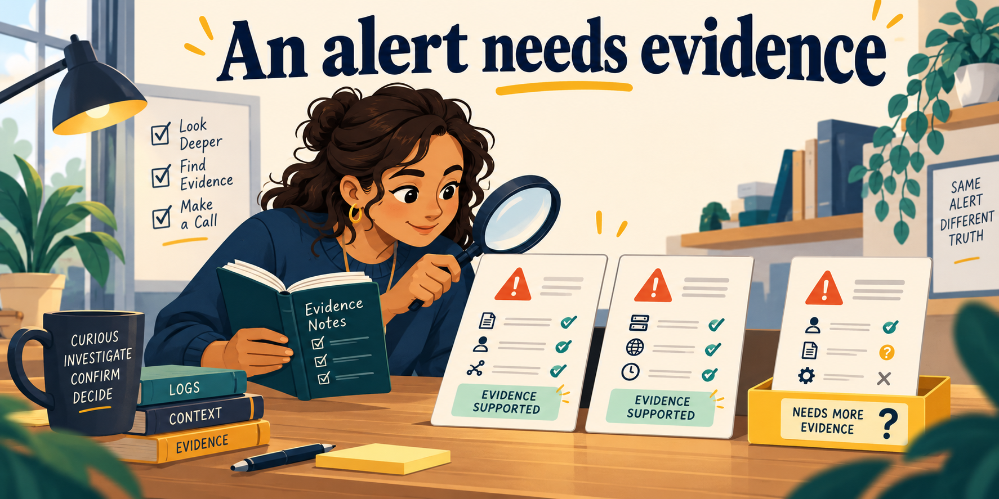
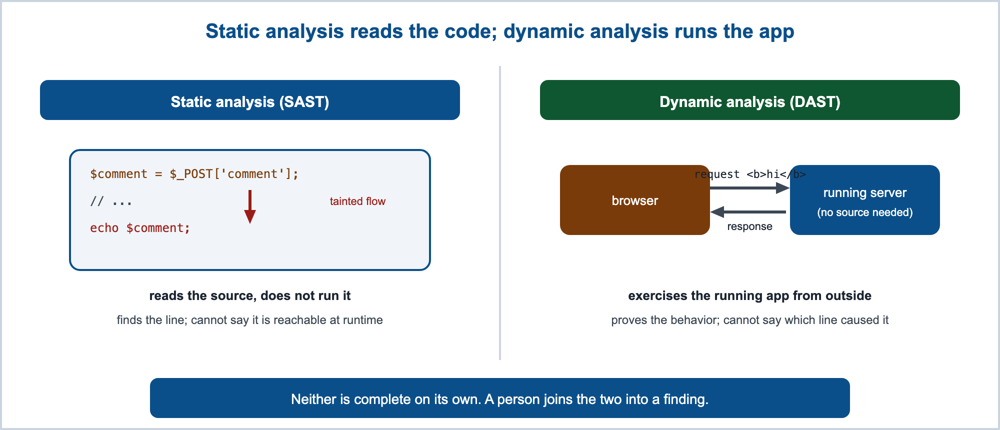
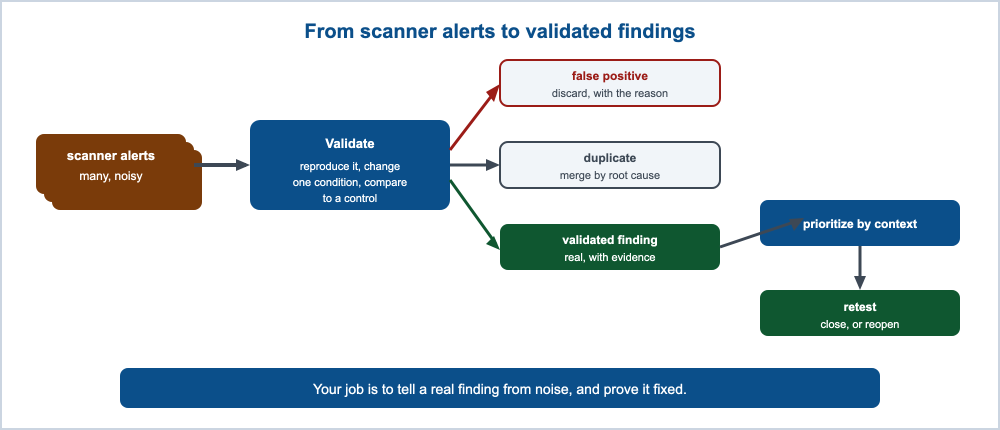

A scan report contains twelve alerts. Three repeat the same cookie setting, one names a component the application does not use, and one request reached the login page instead of the customer record. Which alerts describe a weakness? Which require more evidence? A useful security report explains those decisions so a developer can act on them.
Security testing and vulnerability assessment turn observations into defensible conclusions. A scanner supplies leads. Your analysis connects each lead to a particular asset, behavior, and repair.

1Required reading
These are required reading for the module. This page teaches everything the assignment and the quiz need on its own, so you never depend on an outside site to pass. The readings give you the same material in the industry's own words, which is what a scan report, a CVE advisory, or a bug report will use.
- OWASP Top 10:2025 A02 Security Misconfiguration. The category most of a passive scan's alerts describe: missing headers, weak cookie settings, exposed version banners, and other information leaks.
- OWASP Web Security Testing Guide. The operative reference for this module. It is the organized testing checklist that a test scope and a report are drawn from.
This module sits across two OWASP categories. Security Misconfiguration is what a scan is good at surfacing. Insecure Design is what a scan cannot see, and it is linked in section 6 where this page covers the blind spots.
This lecture is also assigned reading. Your module task list names it alongside the two readings above, and you are responsible for what is on this page.
2Testing as evidence
A security claim is worth only as much as the test that could disprove it. "The application is secure" is too broad to establish with a finite test. A discovered weakness can disprove it, but a successful scan cannot establish the absence of every weakness. A claim you can test is narrow enough to fail:
- every SQL value in this PHP route is bound to a prepared statement;
- one student cannot retrieve another student's record;
- an untrusted comment renders as text on every page that displays it;
- a logged-out session identifier cannot be reused; and
- malformed input fails without revealing a stack trace.
A test needs an expected result and an observation that would contradict it. For example, a representative who receives another representative's private record contradicts the ownership rule, even if the HTTP response is 200. A denial for an owned record also matters: it shows that the application may have broken legitimate use.
OWASP Application Security Verification Standard turns broad goals into numbered, checkable requirements, which is a ready source of claims narrow enough to test.
3The four methods and the evidence each gives
Static analysis, dynamic testing, manual review, and dependency analysis examine different aspects of an application. Combining them gives a stronger basis for a conclusion. The following comment-display example shows the evidence each method can contribute; it is not the assignment repair.
<?php
// WHY: Raw request text can become HTML elements at this output sink.
$comment = $_POST['comment'] ?? '';
echo '<div class="comment">' . $comment . '</div>';Vulnerable. Why: Raw request text can become HTML elements at this output sink.
A comment submitted by one user is echoed into a page that other users load, with nothing between the input and the HTML sink. That is the shape of cross-site scripting (CWE-79), which Module 05 covered. Here is the repair from that module, which encodes the value for its HTML context before it reaches the sink.
<?php
// WHY: A string check rejects array-shaped input before HTML encoding.
$comment = $_POST['comment'] ?? '';
if (!is_string($comment)) {
http_response_code(400);
exit('Invalid comment');
}
// WHY: HTML encoding keeps supplied markup as visible text in this text node.
echo '<div class="comment">'
. htmlspecialchars($comment, ENT_QUOTES | ENT_SUBSTITUTE, 'UTF-8')
. '</div>';Secure. Why: A string check rejects array-shaped input before HTML encoding. HTML encoding keeps supplied markup as visible text in this text node.
The four methods below examine both the flaw and this fix.
Static analysis (SAST)
Static application security testing reads the source without exercising the running interface. For a PHP portal it can flag request data reaching an echo, a database call, a shell call, include, or a redirect; SQL built by string concatenation, which is SQL injection (CWE-89) from Module 04; unsafe deserialization; loose comparisons in a security decision; and hard-coded secrets. On the specimen above, a static analyzer follows $_POST['comment'] from the source to the echo sink and reports the unencoded flow. The evidence it gives is that a path exists in the code.
Its strength is reach. It can see code that is awkward to exercise by hand, and it runs before anything is deployed, which is the cheapest moment to find a defect.
The source cannot tell the tool whether the path is deployed, whether a caller it did not analyze already validated the input, which user can reach the route, or what a business rule is supposed to mean. An analyzer's incomplete model can produce an alert that needs further investigation. Missing deployment information alone does not prove an alert false. Dismissing a false positive is legitimate work rather than laziness, as long as you record why.
Dynamic analysis (DAST)
Dynamic testing interacts with a running application over HTTP and observes responses, timing, cookies, headers, and state changes. A web scanner such as OWASP ZAP is a dynamic tool: it crawls the site, then sends requests and reads what comes back. It needs no access to source, which is also what makes its evidence credible, because it saw the system actually do something.
On the specimen, a dynamic check submits approved harmless markup and observes what the response does with it.
<div class="comment"><b>hi</b></div>The browser interprets the supplied bold element. This example demonstrates HTML interpretation, not script execution. Whether a particular script executes also depends on its location, browser behavior, and controls such as Content Security Policy.
<div class="comment"><b>hi</b></div>The encoded brackets display as characters in this HTML text context. These responses are illustrative predictions for the snippets above. When testing a running application, record its actual response separately; a predicted response is not a performed test.
A dynamic scan sees only what its configuration lets it reach:
| Boundary | What it means for the result |
|---|---|
| discovered routes | an endpoint the crawler never found was never tested |
| supplied inputs | a payload class never attempted proves nothing about that class |
| authentication and roles | an anonymous crawl misses every signed-in route |
| application state | a workflow reachable only after checkout is never entered |
| test policy and rate limits | throttling silently truncates coverage |
| the oracle | the tool has to be able to recognize the problem in the response |
Manual review
Human review supplies the context no tool holds. Does the current user own this object? Should this state transition be possible at all? Is this PHP helper used in the correct output context? Does the fix address the root cause or only the one test string? What legitimate behavior could this control break?
Every one of those is a question about intent, and intent is not in the source. Manual review is particularly useful for the design flaws in Module 02 because the reviewer can compare implementation with intended business rules. Automated tests can also detect those flaws when someone has encoded the correct rule and expected result. It makes its own kind of mistake: reviewers see what they expect, and they get tired. Use more than one source of evidence rather than trusting any single technique. OWASP Secure Code Review Cheat Sheet covers how to prepare a review, trace data flows, and write up the result.
Composition and dependency analysis
PHP applications inherit code through Composer packages, PHP extensions, container base images, JavaScript libraries, and the runtime itself. Most of the code in a modern deployment is code your team did not write. Composition analysis inventories the versions in use and compares them against known advisories.
A version match is a lead, not a finding. Before reporting one, establish four things: the component is actually present in the deployed artifact, the vulnerable code path is reachable, it runs in the vulnerable configuration, and the advisory applies to that configuration. Then identify an upgrade or another mitigation. The reverse also holds. No matching advisory means the tool found no matching advisory in its data under that configuration. An unpublished weakness, stale advisory data, or incomplete inventory can still leave exposure. OWASP Vulnerable Dependency Management Cheat Sheet walks through triaging a dependency alert.
Selecting a tool by the evidence needed
The profession reaches for different tools depending on which question it is asking.
| Tool | The question it answers |
|---|---|
| Nessus | Which known-vulnerability or configuration checks produce evidence about this host? |
| OWASP ZAP | What does this running web application expose, found mostly by automated crawling and attack? |
| Burp Suite | What happens when a tester inspects or changes an HTTP request? Its scanning capabilities depend on edition. |
| Psalm | Can PHP request data reach a security-sensitive sink without an appropriate control? |
Nessus examines hosts and services for vulnerabilities and configuration problems. ZAP supports passive analysis and active web testing. Burp includes tools for intercepting and repeating HTTP requests; automated Scanner capabilities are available in appropriate paid editions, rather than every edition. Psalm is a PHP static analyzer whose taint analysis follows data from sources to sinks. None of these tool names establishes complete coverage.
Psalm security analysis documentation explains PHP taint analysis. Burp tools documentation distinguishes manual tools and edition-dependent Scanner features. Tenable Nessus documentation describes its vulnerability-scanning role. ZAP passive scanning and active scanning describe the difference between observing messages and sending attack requests.

4From alert to finding
Scanners use rules, heuristics, and sometimes more complex analysis to identify suspicious conditions. Deciding which matches are real, here, in this application, is a person's job. Start by reading the alert. Alert formats differ by product, but the following fields are common, and you read every field before you believe or dismiss it. Below is one illustrative alert, shown so this page is self-contained.
Alert: Cookie No HttpOnly Flag
Risk: Low
Confidence: Medium
URL: https://demo.example.com/login.php
Method: GET
Parameter: PHPSESSID
Evidence: Set-Cookie: PHPSESSID=3f9a...c7; path=/
CWE ID: 1004
Description: A cookie was set without the HttpOnly attribute, so script
running in the page can read it. Combined with a cross-site
scripting flaw, the session cookie could be stolen.Whether this alert matters here is a separate question the tool cannot answer. If the session cookie already carries HttpOnly on every other route and only this login page omits it, that is a real gap. If the cookie contains no sensitive value and does not authenticate a user, the specific claim about a sensitive session cookie may not apply. That needs evidence about the cookie's purpose. A missing HttpOnly attribute can be accurately reported while its assumed security impact is overstated.
A finding another engineer can act on records more than a severity word:
| Field | Question it answers |
|---|---|
| Title | What failed? |
| Location | Which route, file, or component? |
| Preconditions | Which identity and application state are required? |
| Reproduction | What minimal steps show the behavior? |
| Expected and actual | What should have happened, and what did? |
| Asset and impact | What can be disclosed, changed, or disrupted? |
| Confidence | What evidence supports the conclusion, and how strong is it? |
| Root cause | Which design or code decision failed? |
| Remediation | What is the smallest complete change? |
| Retest | How will closure be demonstrated? |
Three particularly useful fields are reproduction, root cause, and retest: reproduction lets someone else see it, root cause says what to fix, and retest says how anyone will know it is fixed.
Several alerts often share one root cause. One raw, unencoded comment rendered on five pages is one output-handling defect with five affected locations, not five defects. Deduplicate by root cause while keeping the full list of affected locations, because the alternative is five slightly different local fixes and a sixth page nobody noticed. Then classify every result as one of: confirmed; false positive, with the reason; needs investigation, with an owner; accepted risk, with an owner and an expiry date; fixed, pending retest; or closed, with evidence. "Needs investigation" with no owner is how a finding quietly disappears.
Do not paste session tokens, passwords, API keys, or real personal data into a report. Findings get forwarded, pasted into tickets, and archived in systems with wider access than the application. Describe the value, redact it, and keep the secret out of the record.

A reproducible validation record
Validation starts with the claimed behavior. For a cookie alert, a header is relevant evidence. For an access-control alert, a response body alone needs the identity, object owner, expected permission, and comparison case. A screenshot of a scanner severity label cannot establish either behavior.
A useful record separates supplied evidence from observations and conclusions. This is a worked example on a fictional review application, not a result from your portal or the assignment packet.
Claim: A sensitive session cookie is readable by same-origin script.
Supplied artifact: Response header for GET /reviews/login
Observed in supplied header: HttpOnly is absent from review_session.
Known from supplied design: review_session authenticates the user's session.
Conclusion: The cookie-setting control is missing in this response.
Potential impact: Script executing in this origin could read the cookie.
Not established: A working XSS path or actual theft of a session.
Next check: Inspect the common session initialization and all issuance paths.A false positive needs a specific explanation. For example, an analyzer reports an untrusted value passed to an HTML sink, but its trace omitted a verified helper that applies the appropriate encoding. Evidence about that helper and output context can refute the alleged unsafe flow. A low severity, an inconvenient repair, or a lack of observed attacks cannot refute it.
A result can also remain unresolved. Missing source, a failed login, or an incomplete response may prevent a conclusion. Recording the exact missing evidence is more useful than choosing confirmed or false positive to fill every box.
Keeping records useful
Evidence handling is part of the test design. Reports circulate beyond the application team, and even fictional lab credentials can be confused with real credentials when copied into another environment. A redacted value such as [SESSION REDACTED] communicates the field without exposing its contents.
Retain the original allowed evidence and record where the excerpt came from, because an unexplained edit can remove the condition another reviewer needs to inspect. A file hash can help show whether an evidence file changed; it does not prove that the file's contents are true or that its author performed a test. In this course, the submitted report preserves your analysis and evidence as directed by the assignment.
The Orientation incident-reporting guide provides the report-writing process. TC-IR-01 is the course template; NIST guidance informs the reasoning but does not prescribe that form. For a simulated assessment, write recommendations and proposed retests as proposals. A planned retest is not closure evidence.
5Scope and authorization
Permission to use an application does not automatically include permission to security-test it. Rules Of Engagement establish the authorized activity, the people responsible, and how evidence is handled. Scope is the target and activity boundary within that agreement.
A scope, sometimes called the rules of engagement, is what makes authorized testing stay authorized. It identifies the exact hosts and ports, the permitted paths and methods, the test identities and roles, the start and end times, the rate limits, the allowed data changes, the prohibited destructive actions, the evidence-handling rules, the stop conditions, and a named contact who can be reached during the window.
In this module, you analyze the supplied simulated packet. No instructor-performed scan is claimed. You do not install or run a scanner or attack tool in Cloud Shell. The course environment page states that restriction and the permitted manual workflow. Naming ZAP, Nessus, Burp, or Psalm here teaches what their evidence means, not a requirement to operate those tools.
NIST SP 800-115 is the standard treatment of planning and rules of engagement for a security test. When you find a weakness in a system that is not yours to fix, the OWASP Vulnerability Disclosure Cheat Sheet covers what to do next.
6Coverage and its limits
A test that never reached a route did not prove that route safe. A clean report describes what the tester covered, not the condition of the application. Write the coverage down next to the result, every time.
One signed-in session covers one role's worth of the application. To test authorization you need distinct roles tested separately, because an administrator session cannot represent what an ordinary user can reach and it will hide the privilege-boundary defects you are looking for. Two authorized accounts at the same privilege level let a test examine object-level failures: user A signed in, asking for user B's record.
A passive scan is good at what it can read directly off the wire. It flags missing or weak security headers, cookies set without the HttpOnly or Secure attributes, server version banners, and other information leaks. The illustrative alert in section 4 is one of these, a cookie without HttpOnly read straight from a response header, and missing security settings can map to Security Misconfiguration. Each alert still needs review of the actual header, cookie purpose, and affected deployment before its impact or remediation is established.
Generic passive checks do not establish application-specific ownership or workflow rules. Those rules need explicit tests and an expected result.
- Broken object-level authorization (CWE-639). A request for record
id=814returns record 814. The response is a valid HTTP 200 carrying a well-formed record, so nothing in it looks wrong to a scanner. Whether this user is allowed to read record 814 is a rule only a person who knows the application can check. This is the failure Module 08 covers, and it is why two same-role accounts, not one, are what expose it. - Business-logic flaws (CWE-840 category). A checkout that lets a negative quantity credit the account, or a workflow that skips a required approval, is the application working exactly as coded. There is no malformed request and no error to alert on. Finding it takes someone who knows what the workflow was supposed to enforce, which is the design reasoning Module 02 started.
OWASP Top 10:2025 A06 Insecure Design explains design weaknesses such as missing business-rule controls. Object-level authorization also falls under Broken Access Control; the choice of category should follow the actual failed control, rather than the tool that missed it.
False negatives and missing coverage
An anonymous crawler may receive the same login page for every protected URL. Its report can look extensive because many URLs were requested. The important question is whether the responses contain the intended features under the intended identity. A 200 status does not prove authentication succeeded: login pages often return 200.
| Test identity | Useful comparison | What it does not establish |
|---|---|---|
| Anonymous visitor | Protected routes deny access without a session | Correct permissions after sign-in |
| Ordinary user A | A can use A's allowed records | Whether A is denied B's records |
| Ordinary user B | A and B receive different permitted records | Administrator-only features |
| Administrator | Administrative functions work for the privileged role | Ordinary users cannot reach those functions |
The accounts are test fixtures, not classmates' systems. A same-role ownership check compares two authorized identities within your own allowed lab target. It does not authorize requesting a classmate's portal or data.
A coverage statement can distinguish attempted, reached, checked, and inconclusive work. That avoids counting a failed request as a completed security test.
Source: Authored training example, not a performed course scan.
Declared role: Ordinary user A.
Reached features: Review list and own review details in supplied responses.
Excluded: Administrator routes and deletion actions.
Gap: No second same-role account response was supplied.
Conclusion limit: Cross-user ownership enforcement remains unestablished.7Prioritization and closure
A scanner's severity label is computed from generalized assumptions about a system it has never seen. Adjust it with what you know: how sensitive the asset is, how hard the weakness is to exploit and what it requires, how many users or tenants it affects, what privilege it grants, whether it is reachable from the internet, and what recovery would cost. A low-complexity cross-tenant disclosure that any registered user can reach outranks a dramatic issue that needs a trusted administrator and a feature flag nobody has enabled. Say so in the report, with the reasoning, because the reasoning is what lets someone else disagree usefully.
Severity, confidence, and priority
Severity describes the consequence and exploit conditions. Confidence describes how strongly the evidence supports the finding. Priority expresses the order and urgency of action in this organization. A plausible severe issue with weak evidence can deserve urgent investigation without being presented as a confirmed compromise.
| Situation | Defensible next decision |
|---|---|
| Confirmed cross-user exposure of private records | Prioritize containment and repair based on exposed assets and reachable roles |
| Missing cookie attribute with no demonstrated script path | Confirm cookie purpose, repair the configuration, and investigate relevant script exposure |
| Dependency alert with uncertain installed version | Obtain inventory evidence before claiming the version is affected |
| Similar alerts on multiple routes | Investigate the shared control while preserving every affected route |
A CVSS score describes technical vulnerability characteristics under its scoring assumptions. It does not establish whether the affected component is deployed here, whether someone exploited it, or which business process must recover first. If the packet supplies a score, retain its provenance and distinguish it from your reasoned course priority.
Remediation and closure
A finding is not closed because a fix was merged. A merged fix is a change event. Closure is evidence that the weakness is gone and that ordinary use still works. The path a finding travels looks like this:
discover -> validate -> prioritize -> assign -> repair -> regression test -> security retest -> close or reopenClosure evidence should carry the original reproduction, the repaired code or configuration, the original negative test now failing safely, a check that legitimate behavior still passes, the relevant analysis result, and any residual risk stated plainly. The proof step is the whole point. "I fixed it" is a claim. The test that used to reproduce the weakness and now cannot is the evidence.
8Common misconceptions
✕"A scanner found it, so it is exploitable."
An alert is a claim about a pattern. Validate it, reproduce it, and record what you did before you call it a finding.
✕"No alerts means the application is secure."
It means no alerts under that scan's coverage, roles, and configuration. State the coverage, or the sentence means nothing.
✕"Static analysis is better than dynamic, or the other way around."
They answer different questions and have complementary blind spots. Static analysis reads code that is never run; dynamic testing sees behavior that never appears in the source. Preferring one in the abstract is a category error.
✕"Fix the line the tool reported."
The reported line is where the tool noticed, not always where the decision went wrong. Trace to the root cause and repair every affected sink, not the one string the tool happened to send.
✕"A critical CVE in a dependency is automatically a critical finding for us."
Only if the component is deployed, the vulnerable path is reachable, it runs in the vulnerable configuration, and the advisory applies; an upgrade or mitigation is a separate response decision. A version match is a lead.
✕"Retest means run the whole scan again."
A focused reproduction and legitimate-use comparisons directly test the repair. Wider regression testing may also be necessary when the changed control is shared; scope follows the change and risk.
✕"We can test production the way we test the lab."
Rate limits, destructive actions, and real user data change the plan. That is what a written scope is for.
9Check your understanding
Work these before you read the answers. The quiz draws on the same ideas.
- Give one claim about the portal that can be tested and one that cannot, and say what makes the difference.
- What can static analysis see that dynamic testing may miss, and what can dynamic testing see that static analysis may miss?
- What is the difference between an alert and a finding, and which three fields of a finding do most of the work?
- Read the illustrative alert in section 4. Name its risk, its confidence, and the CWE it maps to, and say what still has to be checked before it becomes a finding.
- Why does authenticated testing need more than one role, and why are two accounts at the same privilege level useful?
- What does a scope document contain, and why does this course use supplied evidence instead of student-operated scans?
- A passive scan reports no findings on a portal you know has a broken record-access check. Explain why the scan missed it, and name the module that covers that weakness.
- A dependency scanner reports a critical CVE in a Composer package. List the checks before you report it as a finding.
- Your report says "no findings." Write the sentence you should have written instead.
- What evidence closes a finding, and why is a merged fix not enough?
- Nessus, ZAP, and Burp: which question does each answer, and which would you reach for to test whether your running portal exposes a weakness through crafted requests you shape by hand?
Answers: (1) a testable claim is narrow enough that something could disprove it, such as "every SQL value in this route is bound"; "the application is secure" is too broad to establish through a finite test, although a weakness can disprove it. (2) static analysis reaches code that is never run and paths awkward to exercise by hand, while dynamic testing shows real runtime behavior, including configuration and headers that never appear in the source. (3) an alert is a tool's claim that something might be wrong; a finding is an evidence-backed conclusion someone can reproduce and someone can fix; reproduction, root cause, and retest carry the weight. (4) risk Low, confidence Medium, CWE-1004; before it is a finding you still confirm the value is a session cookie and that the header belongs to the relevant response and the cookie carries sensitive session state; another route's setting does not repair this response. (5) one session covers one role, and authorization flaws live in the differences between roles; two same-privilege accounts let you ask whether user A can reach user B's record. (6) a scope names targets, methods, roles, times, limits, prohibited actions, evidence handling, stop conditions, and contacts; this course uses a simulated packet and does not permit scanner operation in Cloud Shell. (7) a passive scan reads only what is on the wire and cannot know who is allowed to read record 814, so a valid 200 response looks fine; broken object-level authorization is covered in Module 08. (8) confirm the component is deployed, the vulnerable path is reachable, it runs in the vulnerable configuration, and the advisory applies; an upgrade or mitigation is a separate response decision. (9) "No findings under the stated coverage, roles, configuration, and time window." (10) closure needs the original reproduction now failing safely plus legitimate behavior still passing; a merged fix is a change event, not proof the weakness is gone. (11) Nessus answers what known-vulnerable software and misconfigurations sit on a host, ZAP answers what a running web application exposes through mostly automated crawling and attack, and Burp answers the same web-application question driven by a person shaping requests by hand; reach for Burp when the requests are crafted by hand.
10References and further study
The two required readings in section 1 and the pages linked through the lecture are the operative references. These add the formal weakness entries and one peer-reviewed source on review technique.
- CWE-89: SQL Injectioncwe.mitre.org
, CWE-79: Cross-site Scripting, CWE-1004: Sensitive Cookie Without 'HttpOnly' Flag, CWE-639: Authorization Bypass Through User-Controlled Key, and CWE-840 category: Business Logic Errors. The formal weakness entries that scanner alerts, CVE advisories, and bug reports cite by number. When an alert says CWE-1004, this is what it means.